Working with Layers
Exchange allows you to upload layers. The following are the supported Vector formats:
- ESRI Shapefile
- CSV (Comma Separated Value)
- Google Earth KML
- GeoJSON
The following are the supported Raster formats:
- GeoTIFF
- ERDAS Imagine
- JPEG2000
- NITF (National Imagery Transmission Format)
- CIB (Controlled Image Base)
- 1 Meter
- 5 Meter
- 10 Meter
- CADRG (Compressed Arc Digitized Raster Graphic)
- GNC (Global Navigation Chart)
- JNC (Jet Navigation Chart)
- ONC (Operational Navigation Chart)
- TPC (Tactical Pilotage Chart)
- JOG (Joint Operations Graphic)
- TLM100 (Topographic Line Map 100K)
- TLM50 (Topographic Line Map 50K)
All of the following filetypes can be uploaded by being placed in a Zip Archive (.zip).
Once the layers are uploaded, they will be available to other users in Exchange.
Uploading a layer
-
Select the link on the top toolbar. This will bring up the Explore Layers page.
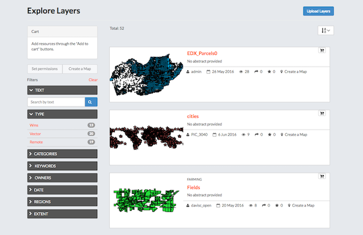
-
Select the button. This will bring up the upload form.
-
Either browse to the files to be uploaded or drag and drop them in the browser. Note that many files consist of multiple files to be complete. If you are uploading an ESRI Shapefile, then you need to include the .dbf, .prj, .shp, and .shx files.
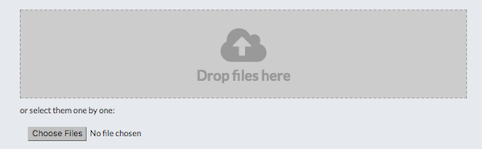
-
Click on the 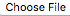 button. This will bring up a local file dialog. Navigate to your data folder and select the files composing the geospatial layer. Note that some data formats consist of multiple files.
-
Exchange has the ability to restrict who can view, edit, and manage layers. On the right side of the page, under Who can view and download this data?, select Any registered user. This will ensure that anonymous view access is disabled.
-
In the same area, under "Who can edit data for this layer?", type a user or users in the field that you want to restrict edit access to. This will ensure that only specific users are able to edit the data in the layer.
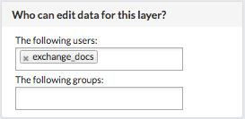
-
If no destination is selected, the files will be imported into the default spatial data store for Exchange. This will always be the destination for raster data.
If you have vector data that you want to have time enabled, then check the box for 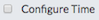.
If you have vector data that you want to be versioned, then check the box for 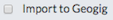. The form will update to provide a dropdown menu for existing GeoGit repositories. To use an existing repository as the destination, select it in the dropdown. In order to import the data into a new GeoGig repository:
- type the name of the repository
-
select that name in the dropdown so it appears in the field.
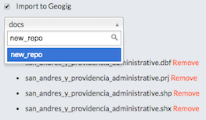
-
Select the 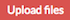 button to upload the data and create a layer. A dialog will display 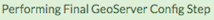 showing the progress of the upload.
If you selected , then a new window will open for Time Options.
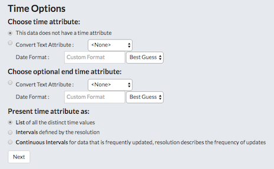
A feature can currently support one or two time attributes. If a single attribute is used, the feature is considered relevant at that single point in time. If two attributes are used, the second attribute represents the end of a valid period for the feature.
A time attribute can be one of:
- An existing date
- Text that can be converted to a timestamp
- A number representing a year
The 'best guess' will handle date and optional time variants of ISO-8601. In terms of the formatting flags noted above, these are: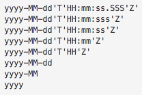
-
Your layer has been uploaded to Exchange. Now you will be able to access to the its info page (clicking on the button), access to its metadata edit form (clicking on the button) or to manage the styles for it (clicking on the button).
Layer information
- TODO
Layer Detail Tabs
- TODO
Editing Metadata and Managing Layers
- TODO
Edit Metadata
- TODO
Edit Permissions
- TODO
Manage Styles
- TODO
Replace a Layer
- TODO
Remove a Layer
- TODO
Downloading Data from a Layer
- TODO
Data
- TODO
Metadata
- TODO